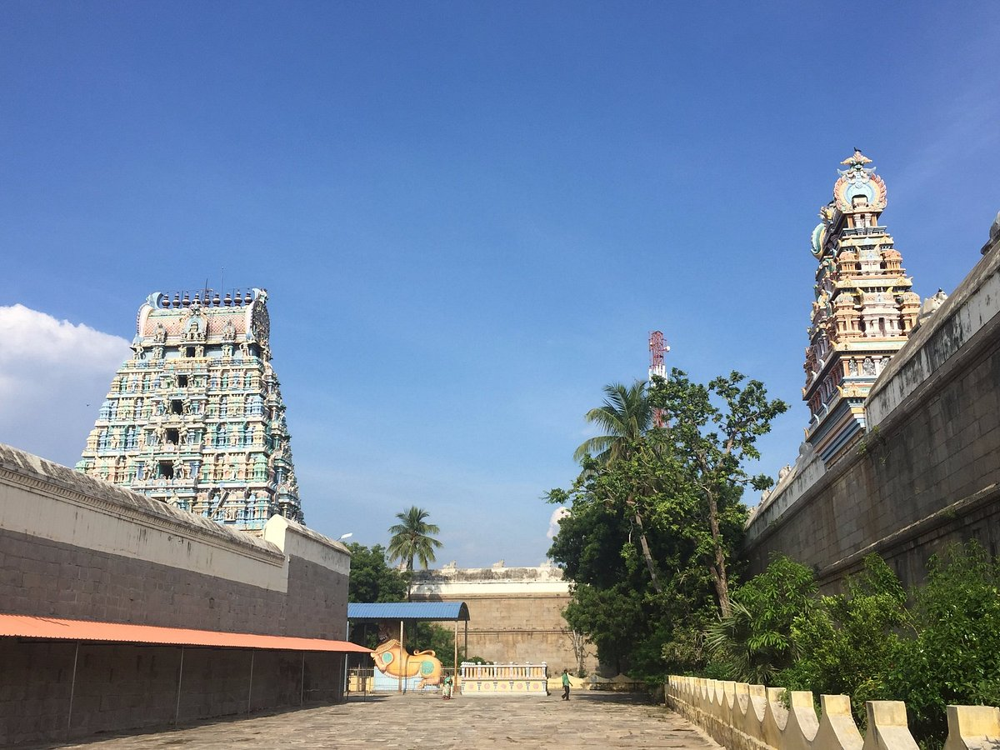

VELLORE
VIRINCHIPURAM

Virinchipuram is a historical village located in the Kanchipuram district of Tamil Nadu, India, known for its rich cultural and religious heritage. The village is historically significant due to its association with the famous Virinchipuram Temple, dedicated to Lord Shiva. This temple is renowned for its intricate architecture and historical value, attracting both devotees and historians. The name "Virinchipuram" is believed to be derived from the legend of Lord Shiva, where the deity is said to have appeared here in response to the prayers of the local inhabitants. Over the centuries, the temple and the village have been a center of religious activities, and the area continues to hold spiritual importance for the people of Tamil Nadu.
The village's connection to religious practices and festivals has made it an integral part of the local culture. In addition to its temple, Virinchipuram is also known for the serene environment that surrounds it, with lush green fields and calm surroundings. This peaceful setting is often seen as a place for spiritual reflection and retreat. The temple and its festivals are central to the community, and they play an essential role in maintaining cultural traditions, drawing pilgrims and tourists alike. The annual festivals, including those dedicated to Lord Shiva, see a large congregation of devotees participating in rituals, prayers, and processions, further cementing Virinchipuram’s reputation as a center of spiritual life.
In recent years, the village of Virinchipuram has also seen changes due to modernization and urban expansion, particularly as nearby towns and cities like Kanchipuram develop. However, despite these changes, Virinchipuram has managed to preserve its traditional values, customs, and rural charm. Agriculture continues to be a mainstay of the local economy, and the community remains closely knit. The village’s historical, cultural, and spiritual significance continues to be a vital part of the region’s identity, making it an important landmark in the broader history of Tamil Nadu.